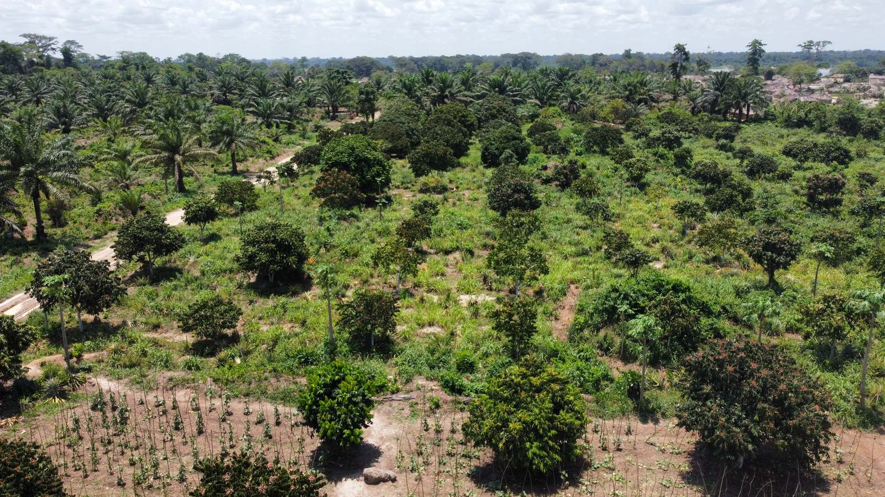
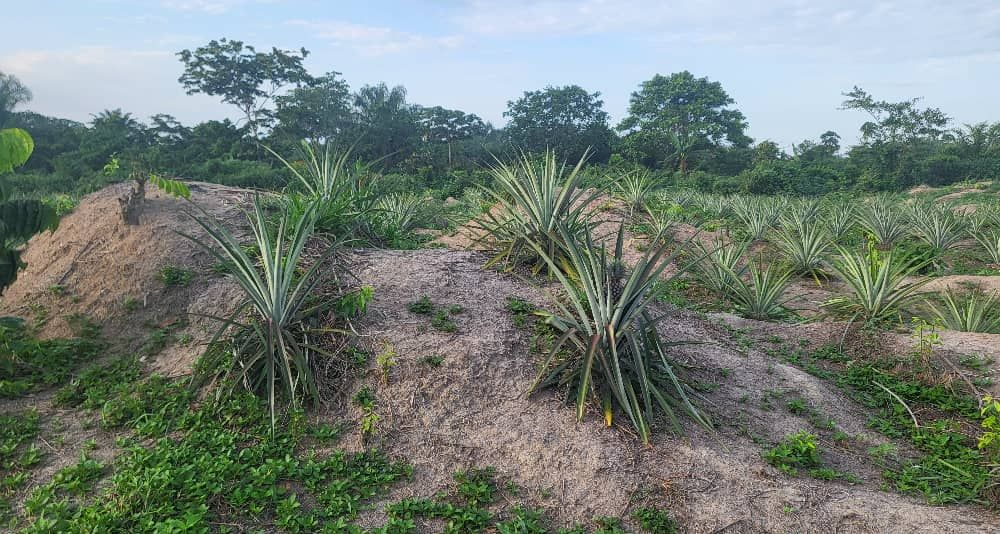
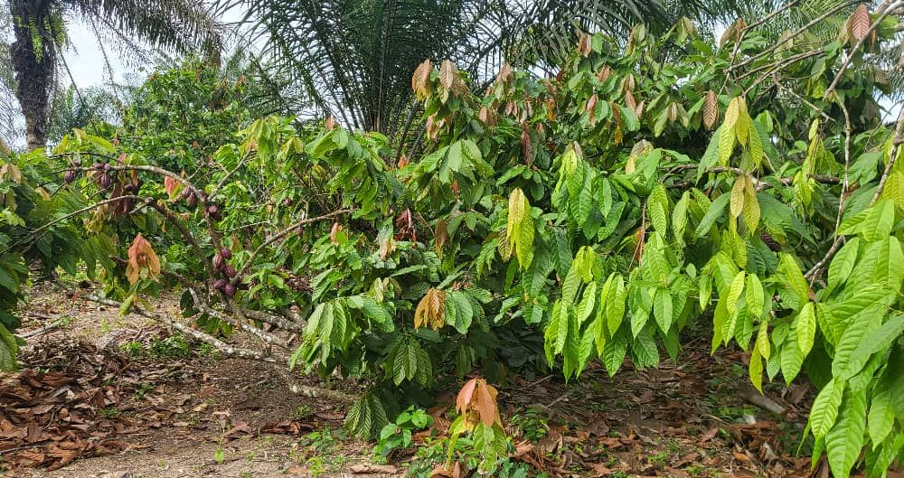
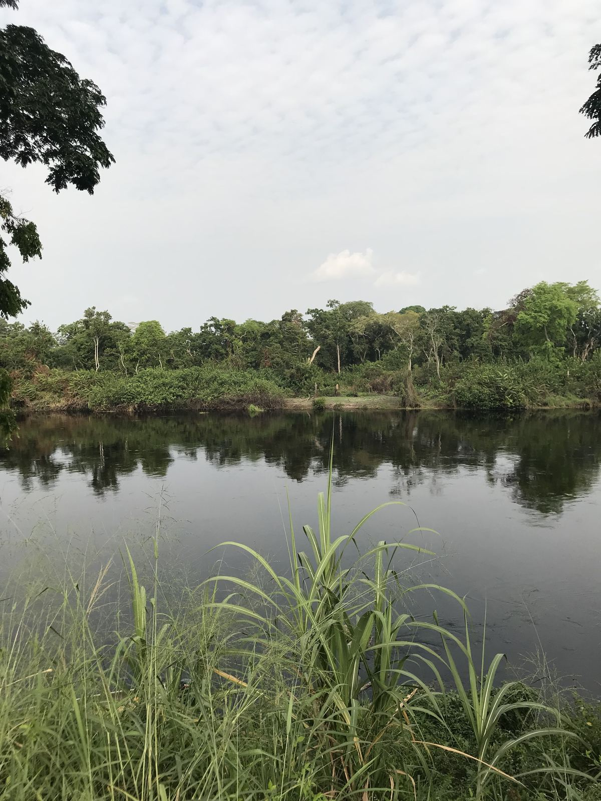
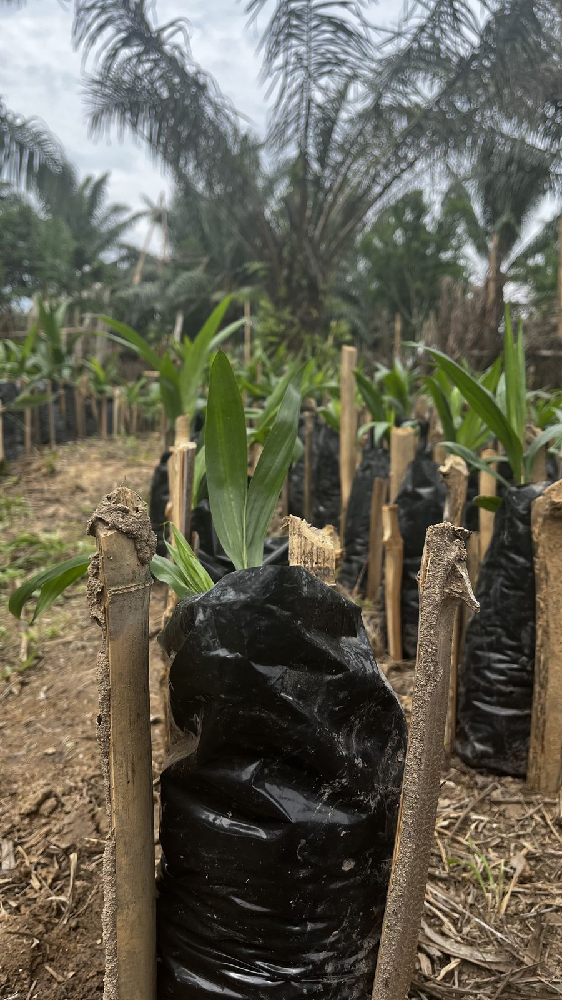
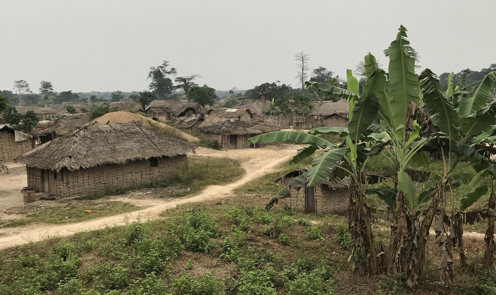

Une terre entre deux rivières.
Ibenga, district d'Enyellé, département de la Likouala, au nord de la République du Congo. Là où l'Ibenga rejoint l'Oubangui.
Ibenga, Enyellé, Likouala.
Le domaine est bordé par la rivière Ibenga, près de sa confluence avec l'Oubangui, qui marque la frontière avec la République démocratique du Congo.
On y arrive par la rivière ou par la route depuis Impfondo, chef-lieu du département.
Ce que la terre donne.
Trois éléments qui font le domaine, tels qu'on les voit sur place.

Une terre travaillée en buttes
Les ananas et les cultures vivrières sont plantés sur des buttes de terre meuble.

Des cultures qui se protègent
Les cacaoyers grandissent à l'ombre des palmiers et des grands arbres, les ruches sont posées en lisière.

La rivière, chemin et frontière
Elle borde le domaine, elle transporte les récoltes, elle marque la frontière.

Notre façon de faire, telle qu'on la voit sur place.
Des gestes simples, répétés à chaque saison.
- Élever nos plantsÀ la pépinière du domaine
- Associer les culturesLe cacao à l'ombre des palmiers
- Garder des abeillesDes ruches en lisière
- Sécher au soleilSur claies, sous les palmiers
